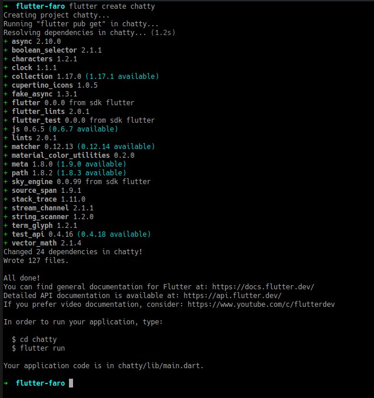
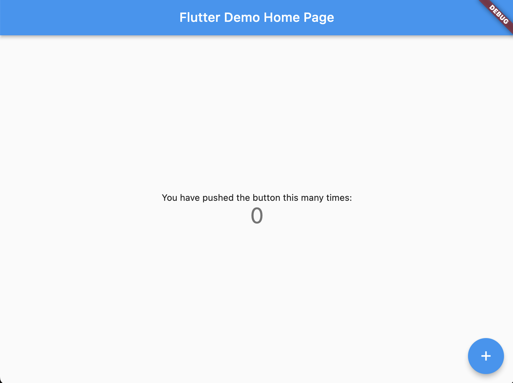

This codelab is about creating a Chat app to chat with Open AI.
The idea is to create a simple chat app for the user to be able to interact with different AI models of Open AI. For the purpose of this workshop we will focus on text completion models (text-davinci) and image models (dall-e)
For the next hours we will be learning about:
- Create a flutter app from scratch
- Structure the flutter app to have a chat interface
- Create the API mechanism to communicate with Open AI's text-davinci
- Create the API mechanism to communicate with Open AI's images interface (DALL-E)
- Show a Whisper flutter app example

Prerequisites
⚠️ Required materials
Computer with internet access :). For the best experience, the laptop should have Flutter installed on it prior to starting the codelab to save time. Windows/Linux/Mac would all be fine.
Check out: Install Flutter After you should be able to run flutter doctor without any errors.
A device and cable to connect to the laptop (iOS or Android ) OR an Emulator (iOS or Android). For Android you can install Android Studio or the "Command line tools only".
VS Code installed with Dart and Flutter Extensions.
Make sure to run "flutter doctor" to check if everything is ok and there are no problems with your flutter installation.
To create a new flutter app, just run
flutter create chatty
If all runs properly...

And test run the app by executing cd chatty; flutter run
You should now have your Flutter demo app running.

We are going to create an app called Chatty.
Chatty will be responsible for relaying our communications to OpenAI:
- Set up a simple screen with a text input, a button that sends the text prompt
- Set AppBar, identifying our AI model we're talking to.
- Set up the screen with the chat's history, composed of bubbles. Our messages appear on bubbles from the right side. Open AI's messages appear on bubbles comming from the left side.

Lets create a StatefulWidget called ‘ChatView' this will be our screen to hold the message bubbles and the input to request.
When creating a new StatefulWidget you should have something this:
class ChatView extends StatefulWidget {
const ChatView({Key? key}) : super(key: key);
@override
State<ChatView> createState() => _ChatViewState();
}
class _ChatViewState extends State<ChatView> {
@override
Widget build(BuildContext context) {
....
}
}
So you have created a new StatefulWidget, now lets complete it, whats missing?
Right, we need to add a ListView to hold the message bubbles and a TextField.
class _ChatViewState extends State<ChatView> {
@override
Widget build(BuildContext context) {
return Scaffold(
appBar: AppBar(
title: const Text("Chat"),
),
body: Column(
children: [
ListView.builder(
itemCount: 0,
itemBuilder: (BuildContext context, int index) {
}),
TextFormField()
]));
}
}
Hmm 🤔 is this all?
Hehe of course its still incomplete, lets think, we need to store somehow the messages. This will then be used to add to the ListView so that messages are presented.
Ok no problem!
Lets create a List data final List
class _ChatViewState extends State<ChatView> {
final List<String> _messages = [];
@override
Widget build(BuildContext context) {
....
}
Ok, try to do a hot reload to apply the changes.
Now we need to focus on the TextField that will listen to the keyboard changes:
class _ChatViewState extends State<ChatView> {
final List<String> _messages = [];
@override
Widget build(BuildContext context) {
....
ListView.builder(...),
TextFormField(
/// add this:
textInputAction: TextInputAction.done,
onFieldSubmitted: (value) {
}
)
....
}
To give you an idea of what will happen, this flow show's the process for requesting the API:

Now is the fun part, requesting stuff!!!
Lets create a new function for doing the request, you can create this funtion below the
Widget build(BuildContext context) {}
and name it ‘request' and recieves a String as the only argument.
For doing the requests we'll use the package ‘Dio', we need to add the package into our pubspec.yaml.
For the function:
void request(String prompt) {
Dio client = Dio();
client.options.baseUrl = "https://api.openai.com/v1/";
/// Set API token
String token = "";
final headers = <String, Object>{};
headers[HttpHeaders.authorizationHeader] = "Bearer ${token}";
headers[HttpHeaders.acceptHeader] = 'application/json';
headers[HttpHeaders.contentTypeHeader] = 'application/json';
client.options.headers.addAll(headers);
var response = await client.post("completions", data: {
"model": "text-davinci-003",
"prompt": prompt,
"max_tokens": 1500,
"stop": ["You:"]
});
print("response: $response");
}
We are almost there...
Ok so far, we have the screen view, with ListView and TextField, and are able to request the API, therefor we need to handle the response and update the UI.
Easy challenge....
void request(String prompt) {
...
var response = await client.post("completions", data: {
...
print("response: $response");
/// lets parse the response
var json = response.data as Map<String, dynamic>;
var message = json["choices"][0]["text"];
print("message: $message");
// so message is the reponse string
}
Now that we can parse the response lets continue to update the UI
void request(String prompt) {
...
print("message: $message");
// so message is the reponse string
setState(() {
_messages.add(message);
});
}
And finnally we need to add a widget to the ListView to see something:
class _ChatViewState extends State<ChatView> {
final List<String> _messages = [];
@override
Widget build(BuildContext context) {
....
ListView.builder(
itemCount: 0,
itemBuilder: (BuildContext context, int index) {
String item = _messages.elementAt(index);
return Container(
color: Colors.blue,
child: Text(item),
);
}),
),
...
How can we tweak it a bit to make it like an chat app?
Explore ChatGPT prompts, example:
Text = "In 2019, OpenAI transitioned from non-profit to 'capped' for-profit, with the profit capped at 100 times any investment. According to OpenAI, the capped-profit model allows OpenAI LP to legally attract investment from venture funds, and in addition, to grant employees stakes in the company, the goal being that they can say 'I'm going to OpenAI, but in the long term it's not going to be disadvantageous to us as a family.' Many top researchers work for Google Brain, DeepMind, or Facebook, which offer stock options that a nonprofit would be unable to. Prior to the transition, public disclosure of the compensation of top employees at OpenAI was legally required.
The company then distributed equity to its employees and partnered with Microsoft and Matthew Brown Companies, who announced an investment package of $1 billion into the company. OpenAI also announced its intention to commercially license its technologies. OpenAI plans to spend the $1 billion 'within five years, and possibly much faster'. Altman has stated that even a billion dollars may turn out to be insufficient, and that the lab may ultimately need 'more capital than any non-profit has ever raised' to achieve artificial general intelligence.
The transition from a nonprofit to a capped-profit company was viewed with skepticism by Oren Etzioni of the nonprofit Allen Institute for AI, who agreed that wooing top researchers to a nonprofit is difficult, but stated 'I disagree with the notion that a nonprofit can't compete' and pointed to successful low-budget projects by OpenAI and others. 'If bigger and better funded was always better, then IBM would still be number one.'
The nonprofit, OpenAI Inc., is the sole controlling shareholder of OpenAI LP. OpenAI LP, despite being a for-profit company, retains a formal fiduciary responsibility to OpenAI Inc.'s nonprofit charter. A majority of OpenAI Inc.'s board is barred from having financial stakes in OpenAI LP. In addition, minority members with a stake in OpenAI LP are barred from certain votes due to conflict of interest. Some researchers have argued that OpenAI LP's switch to for-profit status is inconsistent with OpenAI's claims to be 'democratizing' AI. A journalist at Vice News wrote that 'generally, we've never been able to rely on venture capitalists to better humanity'."
1. EXTRACT ALL PERSON PARTICIPANS NAME , FROM THE TEXT ABOVE:
2. EXTRACT ALL COMPANY NAMES , FROM THE TEXT ABOVE:
Hope you had some fun creating this app!
Thank you for participaging in this codelab!
If you have any feedback, don't esitate and contact us, we welcome feedback :)